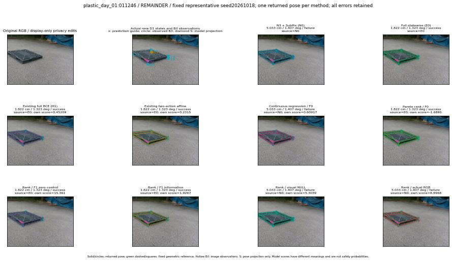

실선은 반환 자세, 초록 점선은 고정 기하 참조입니다. S는 영상 관측이 아닙니다. 점수는 모델별 의미가 다르며 보정된 안전 확률이 아닙니다. 개인정보 처리는 표시 사본에만 적용했습니다.
| 방법·seed | 위치 / 회전 / 공동성공 | 실제 출처 | 선택 후보 | 각 모델 자체 점수 |
|---|---|---|---|---|
| N0 | 5.033 cm / 1.407 deg / failure | N0 | N/A | N/A |
| E0 | 1.822 cm / 1.323 deg / success | E0 | N/A | N/A |
| E0_REGENERATED | 1.822 cm / 1.323 deg / success | E0 | E0_REGENERATED | N/A |
| POSEFIX_SUBPIX_PF_ANCHOR | 2.912 cm / 1.04 deg / success | OTHER | N/A | N/A |
| POSEFIX_SUBPIX_YOLO_ANCHOR | 2.912 cm / 1.04 deg / success | OTHER | N/A | N/A |
| D1_H1_MLP_s20261018 | 1.822 cm / 1.323 deg / success | E0 | E0_REGENERATED | 0.452088862657547 |
| D1_H1_MLP_s20261019 | 1.822 cm / 1.323 deg / success | E0 | E0_REGENERATED | 0.5129892230033875 |
| D1_H1_MLP_s20261020 | 1.822 cm / 1.323 deg / success | E0 | E0_REGENERATED | 0.0643819272518158 |
| D1_H1_PAIR_MLP_s20261018 | 5.033 cm / 1.407 deg / failure | N0 | N0 | -0.47197967767715454 |
| D1_H1_PAIR_MLP_s20261019 | 5.033 cm / 1.407 deg / failure | N0 | N0 | -0.3546142280101776 |
| D1_H1_PAIR_MLP_s20261020 | 5.033 cm / 1.407 deg / failure | N0 | N0 | -0.13017743825912476 |
| D1_H1_PAIR_ROLE_AFFINE_s20261018 | 1.822 cm / 1.323 deg / success | E0 | E0_REGENERATED | 0.2315017282962799 |
| D1_H1_PAIR_ROLE_AFFINE_s20261019 | 1.822 cm / 1.323 deg / success | E0 | E0_REGENERATED | 0.19843879342079163 |
| D1_H1_PAIR_ROLE_AFFINE_s20261020 | 1.822 cm / 1.323 deg / success | E0 | E0_REGENERATED | 0.15662699937820435 |
| R_CONT_F0_s20261018 | 5.033 cm / 1.407 deg / failure | N0 | N0 | 0.6091724038124084 |
| R_CONT_F0_s20261019 | 1.822 cm / 1.323 deg / success | E0 | E0_REGENERATED | 0.596272885799408 |
| R_CONT_F0_s20261020 | 1.822 cm / 1.323 deg / success | E0 | E0_REGENERATED | 0.7356129884719849 |
| R_ORDER_F0_s20261018 | 1.822 cm / 1.323 deg / success | E0 | E0_REGENERATED | -1.6895484924316406 |
| R_ORDER_F0_s20261019 | 1.822 cm / 1.323 deg / success | E0 | E0_REGENERATED | 1.0151629447937012 |
| R_ORDER_F0_s20261020 | 1.822 cm / 1.323 deg / success | E0 | E0_REGENERATED | 3.4710326194763184 |
| R_ORDER_F1_ZERO_s20261018 | 1.822 cm / 1.323 deg / success | E0 | E0_REGENERATED | 15.361239433288574 |
| R_ORDER_F1_ZERO_s20261019 | 1.822 cm / 1.323 deg / success | E0 | E0_REGENERATED | 4.793541431427002 |
| R_ORDER_F1_ZERO_s20261020 | 1.822 cm / 1.323 deg / success | E0 | E0_REGENERATED | 7.064654350280762 |
| R_ORDER_F1_s20261018 | 1.822 cm / 1.323 deg / success | E0 | E0_REGENERATED | 1.926698923110962 |
| R_ORDER_F1_s20261019 | 1.822 cm / 1.323 deg / success | E0 | E0_REGENERATED | 6.71336030960083 |
| R_ORDER_F1_s20261020 | 5.033 cm / 1.407 deg / failure | N0 | N0 | 12.093504905700684 |
| V_ORDER_NULL_s20261018 | 5.033 cm / 1.407 deg / failure | N0 | N0 | 5.303887367248535 |
| V_ORDER_NULL_s20261019 | 1.822 cm / 1.323 deg / success | E0 | E0_REGENERATED | 2.615567684173584 |
| V_ORDER_NULL_s20261020 | 5.033 cm / 1.407 deg / failure | N0 | N0 | 6.857668876647949 |
| V_ORDER_RGB_s20261018 | 5.033 cm / 1.407 deg / failure | N0 | N0 | 8.996779441833496 |
| V_ORDER_RGB_s20261019 | 1.822 cm / 1.323 deg / success | E0 | E0_REGENERATED | 2.8557605743408203 |
| V_ORDER_RGB_s20261020 | 5.033 cm / 1.407 deg / failure | N0 | N0 | -3.515960216522217 |